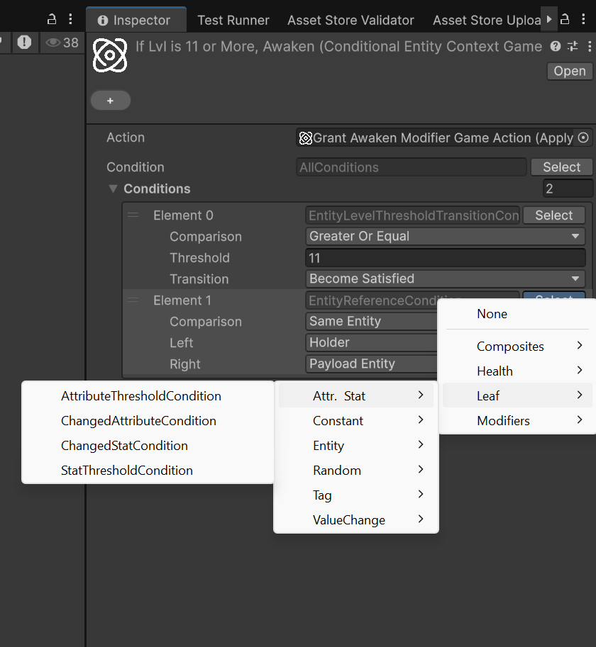
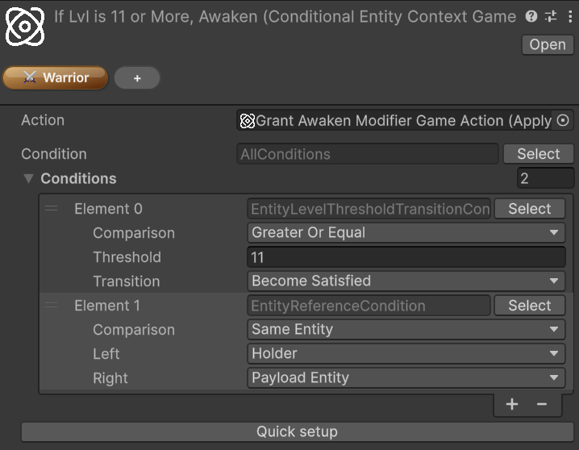

Conditions
🏷️ Version 2.0.0+
Warning
The Conditions system is currently experimental and may change at any time.
Be careful when adopting it for production-critical features. Future package updates may require refactoring condition trees, revisiting authoring workflows, or adjusting integration code that depends on the current behavior.
The feature is expected to move toward a more stable shape once Astra Modifiers is released, where Conditions are used extensively. Until then, it is safer to treat the current API and authoring flow as provisional.
Conditions are reusable predicates evaluated against an EvaluationContext. They let you express editor-authored rules such as "run this action only when the holder is below a threshold", "only pass when the payload entity matches the holder", or "only continue when the target has a required tag set".
Unlike GameTags or GameActions, conditions are usually not standalone assets. They are authored inline in [SerializeReference] fields, where you choose a concrete condition type from a grouped picker and configure it directly in the Inspector.
The condition model
Every concrete condition derives from Condition and implements Evaluate(EvaluationContext ctx).
The evaluation context carries the runtime references that built-in conditions inspect:
| Context value | Typical meaning |
|---|---|
Holder |
The entity that owns the evaluated effect or action |
Performer |
The entity that applied or cast the effect, when available |
EventPayload |
The current trigger payload or event data |
EvaluationContext also exposes TryGetPayload<T>() when a condition needs typed access to the current payload.
Many built-in conditions resolve one of these context slots before applying their actual check. For example, an entity condition may compare the holder against a payload entity, while a tag condition may inspect the resolved entity for one or more required tags.
Context contracts and payload roles
Many of the less obvious conditions are really about which contracts the current payload implements. The system does not rely on a single event-context base class. Instead, conditions look for small focused interfaces that describe what the payload can provide.
Common context contracts
| Contract | Meaning |
|---|---|
IHasEntity |
Exposes the payload's primary entity |
IHasTarget |
Exposes the target entity of the payload |
IHasPerformer |
Exposes the entity that performed or caused the action |
IHasVictim |
Exposes the victim entity when that role exists |
IHasValueChange<T> |
Exposes PreviousValue, NewValue, and AbsAmount for numeric-change payloads |
IHasEntity is the most important bridge contract in the framework. It represents the primary entity carried by a payload, and it is also the interface that lets many GameAction<IHasEntity> workflows accept both entity components and event payloads in a consistent way.
How ConditionTarget resolves entities
Entity-based and tag-based conditions select an entity slot through ConditionTarget:
| Target slot | Resolved from |
|---|---|
Holder |
EvaluationContext.Holder |
Performer |
EvaluationContext.Performer |
PayloadEntity |
IHasEntity on the payload, or the EntityCore of a payload Component |
PayloadPerformer |
IHasPerformer on the payload |
PayloadTarget |
IHasTarget on the payload |
PayloadVictim |
IHasVictim on the payload |
This is why some conditions appear to "just work" with certain event payloads and not with others: the payload must actually expose the requested role.
Common payloads used by built-in conditions
Several built-in event payloads already expose the contracts that the condition system expects:
| Payload type | Contracts | Typical use |
|---|---|---|
StatChangeInfo |
IHasEntity, IHasTarget, IHasValueChange<long> |
Stat-based conditions and long value-change conditions |
AttributeChangeInfo |
IHasEntity, IHasTarget, IHasValueChange<long> |
Attribute-based conditions and long value-change conditions |
EntityLevelChangedContext |
IHasEntity, IHasTarget, IHasValueChange<int> |
Entity level conditions and int value-change conditions |
For example, StatChanged, AttributeChanged, EntityLevelUp, and EntityLevelDown payloads already expose the entity and value-change contracts needed by the related condition families.
Built-in condition families
The type picker groups the built-in condition library into several families:
Composites
Use these to combine or transform other conditions:
AllConditions: logical AND; every child must pass, and an empty list evaluates to trueAnyCondition: logical OR; at least one child must pass, and an empty list evaluates to falseNoneCondition: logical NOR; no child may pass, and an empty list evaluates to trueNotCondition: inverts a single inner condition; if the inner value is null, it evaluates to trueAtLeastNCondition: passes when at leastNchild conditions passAtMostNCondition: passes when at mostNchild conditions passExactlyNCondition: passes when exactlyNchild conditions pass
These are the main building blocks for condition trees that need more than one rule. AtLeastNCondition, AtMostNCondition, and ExactlyNCondition are especially useful when you want a count-based rule instead of a strict AND/OR shape.
Leaf/Constant
Simple fixed predicates:
AlwaysTrueCondition: always passesAlwaysFalseCondition: never passes
These are useful as placeholders or for testing larger composite trees.
Leaf/Attr. & Stat
Conditions in this family evaluate attributes, stats, or stat/attribute-related payloads:
AttributeThresholdCondition: resolves an entity slot, reads one attribute from that entity, and compares it against a thresholdStatThresholdCondition: resolves an entity slot, reads one stat from that entity, and compares it against a thresholdChangedAttributeCondition: checks whether the current payload is anAttributeChangeInfofor a specificAttributeChangedStatCondition: checks whether the current payload is aStatChangeInfofor a specificStat
Threshold-based conditions operate on the current value stored on the resolved entity. By contrast, ChangedAttributeCondition and ChangedStatCondition do not compare numbers at all: they only verify which attribute or stat the current change payload refers to.
AttributeThresholdCondition can also work in percentage mode, where the current value is interpreted as a percentage of the attribute's configured range.
Leaf/Entity
These conditions reason about entity roles and entity relationships in the evaluation context:
EntityReferenceCondition: compares two selected entity slots such as holder, payload entity, performer, target, or victimEntityLevelCondition: resolves one entity slot and compares that entity's current level against a thresholdEntityLevelThresholdTransitionCondition: reads anintvalue-change payload and checks whether a level comparison became satisfied or became unsatisfied across the changeHolderLevelCondition: a shorter holder-only version of a level comparisonIsPerformerCondition: passes whenPerformerandHolderare the same entity
This family is especially useful when you need to distinguish self-targeting, compare holder and payload entity, or react only at specific level boundaries.
Some practical reading tips:
EntityReferenceConditionis the most general entity-role matcher. It is ideal when the meaning of the rule depends on relationships such as "holder equals payload entity" or "payload target is different from performer"EntityLevelConditionlooks at the entity's current live level, not at a before/after transitionEntityLevelThresholdTransitionConditionis for level-change payloads and asks whether a rule changed state across the event (for example, whetherlevel >= 10just became true)HolderLevelConditionis simpler thanEntityLevelCondition, but also less flexible because it cannot look at payload rolesIsPerformerConditionis mainly useful in self-applied or self-triggered workflows
Note
PayloadEntity is often the most useful slot when working with built-in event payloads, because types such as StatChangeInfo, AttributeChangeInfo, and EntityLevelChangedContext already implement IHasEntity.
Leaf/Tag
The tag-focused family lets conditions inspect tags on resolved entities or on active modifier data:
EntityHasTagCondition: resolves one entity slot and checks whether that entity's tags match a configuredGameTagSetHasActiveModifierTagCondition: checks whether the holder currently has at least one active modifier whose tags match the configured set
EntityHasTagCondition supports both Any Of and All Of matching against a configured GameTagSet. HasActiveModifierTagCondition relies on IActiveModifierTagProvider, so it is mainly relevant when the holder is participating in modifier-based workflows. For the tagging workflow itself, see Game Tags.
Leaf/ValueChange
These conditions are designed for payloads that carry value-delta information through IHasValueChange<T>.
All of them read one of these projections:
PreviousValueNewValueAbsAmount
The built-in numeric payloads are split by type:
EntityLevelChangedContextprovidesIHasValueChange<int>StatChangeInfoandAttributeChangeInfoprovideIHasValueChange<long>
Note
This is why the payloads used by built-in events such as entity level up, entity level down, stat changed, and attribute changed work naturally with the Leaf/ValueChange family: they already implement IHasValueChange<T>.
The available conditions are:
IntValueChangeDirectionCondition: checks whether anintpayload increased, decreased, or stayed the sameIntValueChangeModuloCondition: applies a modulo rule to a projectedintvalueIntValueChangeThresholdCondition: compares a projectedintvalue against a thresholdIntValueChangeThresholdTransitionCondition: checks whether anintthreshold comparison became satisfied or unsatisfied across the changeLongValueChangeDirectionCondition: checks whether alongpayload increased, decreased, or stayed the sameLongValueChangeModuloCondition: applies a modulo rule to a projectedlongvalueLongValueChangeThresholdCondition: compares a projectedlongvalue against a thresholdLongValueChangeThresholdTransitionCondition: checks whether alongthreshold comparison became satisfied or unsatisfied across the change
They are useful when the interesting rule is not the absolute final value, but the way a value changed.
This distinction matters:
- Direction conditions care only about increase, decrease, or equality
- Threshold conditions evaluate a single projected value such as
NewValue >= 10 - Threshold transition conditions evaluate whether the comparison changed state between previous and new values
- Modulo conditions are useful for cyclical checks on the projected value, such as verifying that a
NewValuelevel lands on 5, 10, 15, ... or that another projected value repeats on a fixed remainder pattern
For example, if a level changes from 9 to 10:
IntValueChangeThresholdConditionwithNewValue >= 10passes because the new value is 10IntValueChangeThresholdTransitionConditionwith>= 10and Become Satisfied passes because the comparison was false before and true after
Leaf/Random
Randomized gating is provided through:
RandomChanceCondition: passes with the configured percentage chance
This condition evaluates to true based on a configured percentage chance.
Authoring conditions in the Inspector
Because conditions are managed-reference values, the typical workflow is:
- Locate a field that accepts a
Condition - Open the type picker for that field
- Choose a concrete condition from the grouped menu
- Configure its fields, such as target entity slot, comparison mode, threshold, or required tag set
- Wrap the root in composites if the rule needs multiple checks

Note
Conditions are authored inline, so their serialized data lives inside the object that owns the field. You do not create a standalone Condition asset first and reference it later.
Conditional game actions
The most direct built-in use of the system is ConditionalGameAction<TContext>, which wraps another GameAction<TContext> with an optional guard condition.
Astra RPG Framework/Game Actions/Context: Entity/ConditionalAstra RPG Framework/Game Actions/Context: Component/Conditional
If the configured condition evaluates to false, the nested action is skipped. If the condition field is left empty, the action behaves as always allowed.
The custom inspector for conditional actions also exposes a Quick setup row below the condition field. This is meant to speed up structural edits to the root condition tree:
- Wrap the current root in
AllConditions - Wrap the current root in
AnyCondition - Wrap the current root in
NotCondition - Unwrap the current root when the current shape supports it

For the broader GameAction workflow, see Game Actions.
Practical uses
Conditions are especially useful for:
- Gating a
GameActionso it only runs for certain entities or payload states - Comparing holder, performer, and payload entity roles without writing custom glue code
- Reacting only when an attribute or stat crosses a threshold
- Filtering tag-aware behavior through
GameTagSetmatching - Adding probabilistic behavior through a reusable chance-based condition
The main strength of the system is composition. Instead of hardcoding special-case checks into every consumer, you can assemble reusable condition trees directly in the Inspector and keep the rule logic close to the data that depends on it.